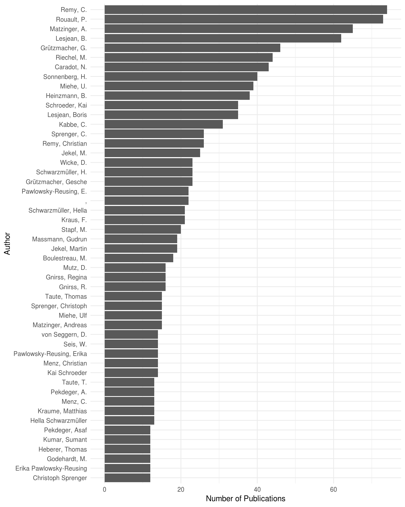

vignettes/analyse-endnote.Rmd
analyse-endnote.Rmdendnote_xml <- system.file("extdata/KWB_documents.xml",
package = "kwb.endnote")
references_df <- kwb.endnote::create_df_from_endnote_xml(endnote_xml)
#> Reading 'KWB_documents.xml' in folder
#> '/home/travis/R/Library/kwb.endnote/extdata' ... ok.
#> Splitting paths ... ok.
#> Joining, by = "record_id"
n_publications <- length(unique(references_df$record_id))The imported Endnote XML library KWB_documents.xml contains 904 which are analysed in detail in the following.
library(dplyr)
#>
#> Attaching package: 'dplyr'
#> The following objects are masked from 'package:stats':
#>
#> filter, lag
#> The following objects are masked from 'package:base':
#>
#> intersect, setdiff, setequal, union
refs_by_type <- kwb.endnote::get_reference_type_names(endnote_xml) %>%
dplyr::count(.data$ref_type_name) %>%
dplyr::arrange(dplyr::desc(.data$n))
knitr::kable(refs_by_type)| ref_type_name | n |
|---|---|
| Conference Paper | 285 |
| Report | 262 |
| Journal Article | 191 |
| Thesis | 70 |
| Generic | 41 |
| Conference Proceedings | 27 |
| Book Section | 20 |
| Book | 7 |
| Unpublished Work | 1 |
refs_with_abstract <- references_df %>%
dplyr::filter(.data$key1 == "abstract") %>%
dplyr::count(.data$record_id, .data$rec_number, .data$ref_type_name)
n_pubs_with_abstract <- nrow(refs_with_abstract)
### Percent of Publications with Abstracts
percent_pubs_with_abstracts <- round(100*nrow(refs_with_abstract)/n_publications,1) 28.7 percent (i.e. 259 / 904 publications) have an abstract.
refs_with_abstract_and_linebreaks <- refs_with_abstract %>%
dplyr::filter(.data$n > 1) %>%
dplyr::arrange(dplyr::desc(.data$n))
n_pubs_with_abstract_and_linebreaks <- nrow(refs_with_abstract_and_linebreaks)
knitr::kable(refs_with_abstract_and_linebreaks)| record_id | rec_number | ref_type_name | n |
|---|---|---|---|
| 592 | 381 | Journal Article | 35 |
| 520 | 430 | Report | 33 |
| 593 | 382 | Journal Article | 29 |
| 587 | 377 | Report | 25 |
| 476 | 467 | Report | 23 |
| 557 | 333 | Report | 13 |
| 844 | 327 | Conference Paper | 13 |
| 554 | 375 | Conference Paper | 11 |
| 242 | 934 | Journal Article | 10 |
| 243 | 720 | Journal Article | 10 |
| 111 | 768 | Conference Paper | 9 |
| 566 | 393 | Conference Paper | 9 |
| 246 | 935 | Journal Article | 7 |
| 508 | 450 | Report | 7 |
| 515 | 379 | Journal Article | 7 |
| 560 | 380 | Journal Article | 7 |
| 724 | 277 | Report | 7 |
| 736 | 172 | Book | 7 |
| 817 | 328 | Conference Paper | 7 |
| 485 | 449 | Conference Paper | 6 |
| 17 | 1044 | Conference Paper | 5 |
| 19 | 997 | Journal Article | 5 |
| 144 | 798 | Conference Proceedings | 5 |
| 514 | 468 | Thesis | 5 |
| 60 | 993 | Conference Paper | 4 |
| 484 | 447 | Conference Paper | 4 |
| 728 | 282 | Report | 4 |
| 24 | 1031 | Conference Proceedings | 3 |
| 248 | 695 | Journal Article | 3 |
| 478 | 460 | Thesis | 3 |
| 507 | 448 | Thesis | 3 |
| 537 | 388 | Report | 3 |
| 880 | 7 | Report | 3 |
| 588 | 339 | Conference Paper | 2 |
However there are some line breaks for these abstracts for in total 34 publications as shown in the table above.
These need to be corrected manually!
Is the accessibility level for the referenc defined in the fiel“custom3” (confidential or not?)
refs_with_accessability_level <- references_df %>%
dplyr::filter(.data$key1 == "custom3") %>%
dplyr::count(.data$value)
n_pubs_with_accessability_level <- nrow(refs_with_accessability_level)
percent_with_accessibility_level <- round(100*n_pubs_with_accessability_level/n_publications, 1)
knitr::kable(refs_with_accessability_level)| value | n |
|---|---|
| confidential | 20 |
| Confidential | 1 |
| confidential; copyright with Veolia DT | 1 |
| internal | 2 |
| private | 1 |
| PU | 19 |
| public | 42 |
| Public | 2 |
is_confidential <- stringr::str_detect(refs_with_accessability_level$value,
stringr::regex("conf|PU|intern|private",
ignore_case = TRUE))
n_pubs_confidential <-sum(refs_with_accessability_level$n[is_confidential])
### in percent
percent_confidential <- 100*sum(refs_with_accessability_level$n[is_confidential])/n_publications Only for 8 (i.e. 0.9 percent) meta information on the accessibility level is explicitly defined, out of which 88 are defined as confidential.
Group references by “custom2” (i.e. “project names”)
refs_with_project <- references_df %>%
dplyr::filter(.data$key1 == "custom2")
n_pubs_with_project_meta <- nrow(refs_with_project)
### in percent
percent_pubs_with_project_meta <- round(100*n_pubs_with_project_meta/n_publications,1)
unique_project_names <- refs_with_project %>%
dplyr::count(.data$value)
knitr::kable(unique_project_names)| value | n |
|---|---|
| AMEDEUS | 6 |
| Antiocker | 1 |
| ANTIOCKER | 4 |
| Aquisafe | 1 |
| AQUISAFE | 19 |
| Aquisafe 2 | 2 |
| AQUISAFE1 | 1 |
| Aquisafe2 | 1 |
| AQUISAFE2 | 13 |
| ASKURIS | 4 |
| Berlinbeach | 1 |
| BIOSENS | 1 |
| CARISMO | 11 |
| CoDiGreen | 20 |
| COMPAS | 1 |
| COSMA | 13 |
| COSMA-1 | 2 |
| CYLIN | 14 |
| Decamax | 1 |
| DECAMAX | 2 |
| DEMEAU | 15 |
| DEMOWARE | 5 |
| DSWT | 3 |
| DW Biofilters | 1 |
| EcoTreat-1 | 1 |
| ENREM | 24 |
| ENREM+ | 1 |
| ERDRE | 2 |
| EVA | 12 |
| HTC | 2 |
| HTC Berlin | 2 |
| HTC-CHECK | 5 |
| IC NASRI | 3 |
| IC PHARMA | 1 |
| IC-NASRI | 2 |
| IDB India | 1 |
| IMF | 13 |
| ISM | 32 |
| IST4R | 6 |
| IST4R / ASKURIS | 1 |
| ITZM | 1 |
| Karolin | 2 |
| KURAS | 31 |
| MBR-TRAIN | 3 |
| MIA-CSO | 28 |
| MIA-CSO, PREPARED | 1 |
| MONITOR-1 | 9 |
| NASRI | 76 |
| NITROLIMIT | 7 |
| NOSTOTOX | 9 |
| ODOCO ARTNOSE | 3 |
| ODOCO-1 | 1 |
| ODOCO-Artnose | 2 |
| OgRe | 14 |
| OLIGO | 6 |
| OptiWells | 1 |
| OPTIWELLS | 1 |
| OptiWells-1 | 5 |
| Optiwells-2 | 2 |
| OXERAM | 16 |
| OXERAM 2 | 18 |
| OXERAM, OXIRED, CoDiGreen, Prepared | 1 |
| OXERAM1 | 1 |
| OXERAM2 | 3 |
| OXIMAR-1 | 1 |
| OXIMAR1 | 2 |
| OXIRED | 1 |
| OXIRED1 | 2 |
| OXIRED2 | 9 |
| P-Pot | 1 |
| P-REX | 25 |
| PharmaTreat | 1 |
| PILOTOX | 3 |
| PPRP | 2 |
| PREPARED | 8 |
| RIKO-1 | 7 |
| RKM | 7 |
| RWE-BO | 2 |
| SAM-CSO | 15 |
| SAPH PANI | 15 |
| SCST | 16 |
| SEMA | 14 |
| SenBao | 1 |
| SPREE2011 | 4 |
| T-MON | 1 |
| TECHNEAU | 10 |
| TECHNEAU 2.5 | 3 |
| TECHNEAU 5.2 | 3 |
| TECHNEAU WP 2.5 | 6 |
| TECHNEAU WP 5.2 | 2 |
| TECHNEAU_5.2 | 5 |
| TECHNEAU_5.2.11 | 1 |
| TECHNEAU_5.2.3 | 1 |
| TECHNEAU_5.2.4 | 1 |
| TECHNEAU_5.2.6 | 1 |
| TestTools | 2 |
| WellMa | 1 |
| WellMa-1 | 7 |
| WellMa-2 | 10 |
| WellMa-DNA | 1 |
| WellMa1 | 4 |
| WellMa2 | 2 |
| WellMA2 | 1 |
| WellMa2_WP0-2 | 4 |
| WellMa2_WP3-4 | 2 |
| WellMaDNA | 4 |
| WssTP | 7 |
In total 78.1 percent (i.e. 706 / 904 publications) contain meta-information on the project. However, the spelling of project names does not follow a controlled vocabulary yet as can be seen in the table above.
Thus it is recommended to establish a controlled vocabulary for project acroyms according to the best-practices defined in the FAKIN project (see here)
refs_by_author_lastfirst <- references_df %>%
dplyr::filter(.data$key2 == "authors") %>%
dplyr::count(.data$value) %>%
dplyr::arrange(dplyr::desc(.data$n))
kwb.endnote::plot_pubs_by_author(refs_by_author_lastfirst[1:50, ])
Quite messy the figure above. Thus names should be entered in Endnote in the following format:
Lastname, Firstname
Also note the , also is an author! This is due to entering a wrong semicolon in the Endnote database and needs to be fixed here for at least the following entries:
pubs_with_semicolon_as_author <- references_df %>%
dplyr::filter(.data$key2 == "authors",
.data$value == ",") %>%
dplyr::count(.data$rec_number) %>%
dplyr::arrange(dplyr::desc(.data$n))
n_pubs_with_semicolon_as_author <- nrow(pubs_with_semicolon_as_author)
knitr::kable(pubs_with_semicolon_as_author)| rec_number | n |
|---|---|
| 183 | 5 |
| 213 | 2 |
| 214 | 2 |
| 226 | 2 |
| 239 | 2 |
| 182 | 1 |
| 210 | 1 |
| 215 | 1 |
| 225 | 1 |
| 232 | 1 |
| 233 | 1 |
| 238 | 1 |
| 241 | 1 |
| 242 | 1 |
In total 14 publications contain one or more semicolon authors. This needs to be fixed manually in the Endnote DB.
For now data-munging is needed to just use the authors` lastname for aggregating the data
refs_by_author_last <- references_df %>%
dplyr::filter(.data$key2 == "authors") %>%
dplyr::mutate(value = stringr::str_remove_all(.data$value, ",.*")) %>%
dplyr::mutate(value = stringr::str_remove_all(.data$value, "^\\w+\\.?\\s+")) %>%
dplyr::count(.data$value) %>%
dplyr::arrange(dplyr::desc(.data$n))
kwb.endnote::plot_pubs_by_author(refs_by_author_last[1:50, ])